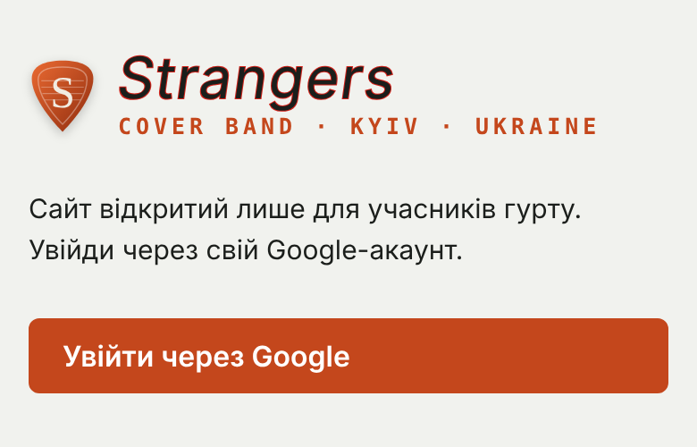
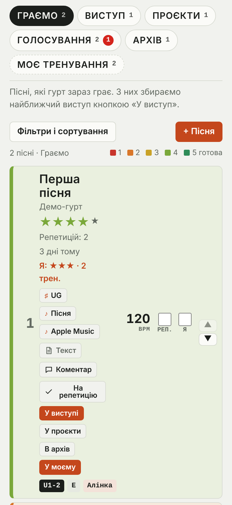
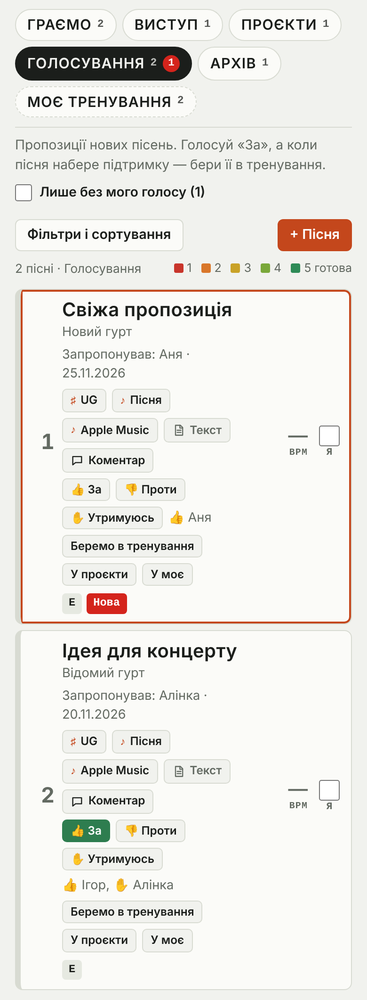
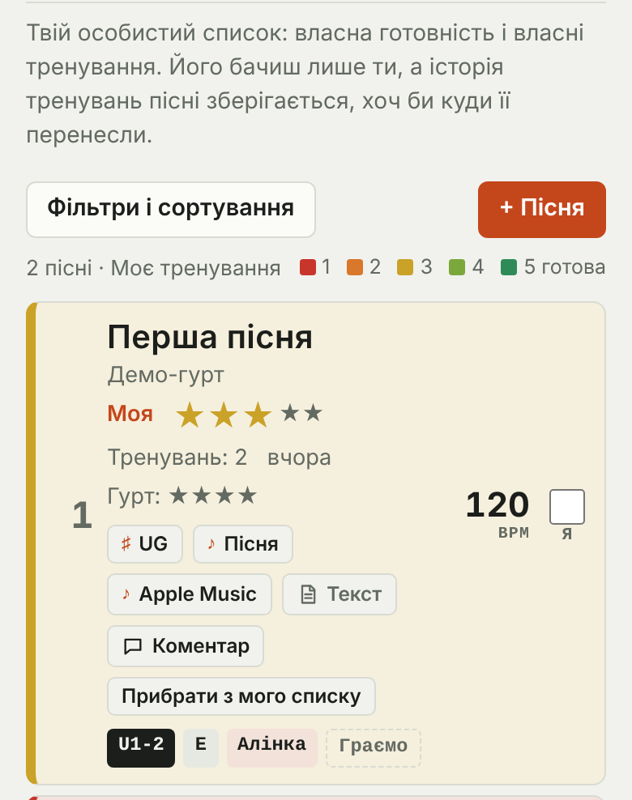
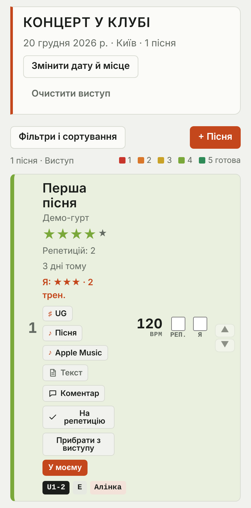
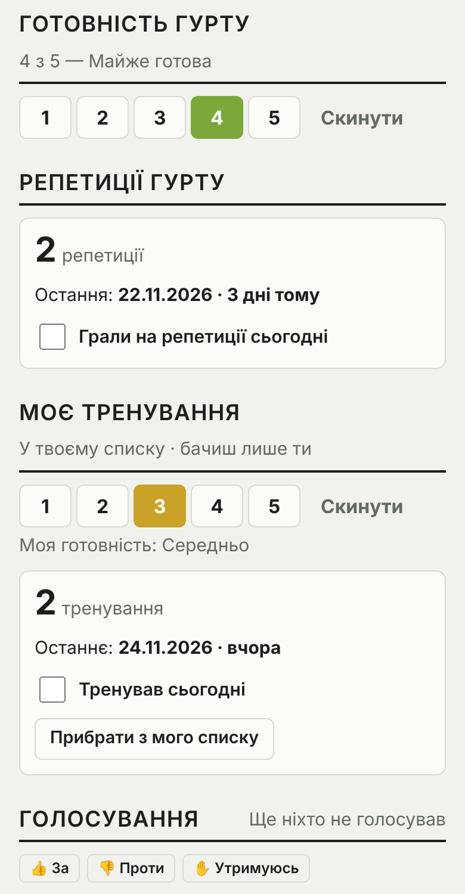
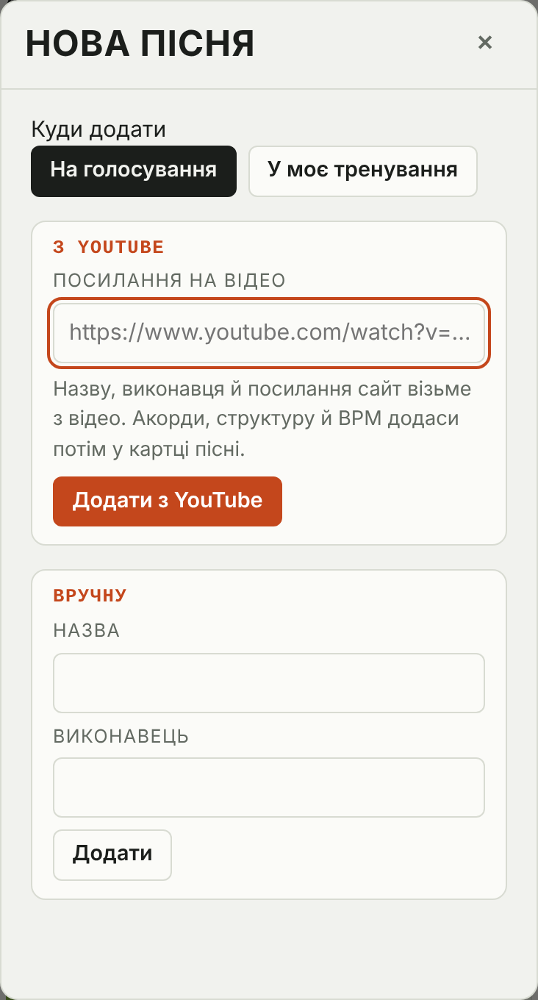
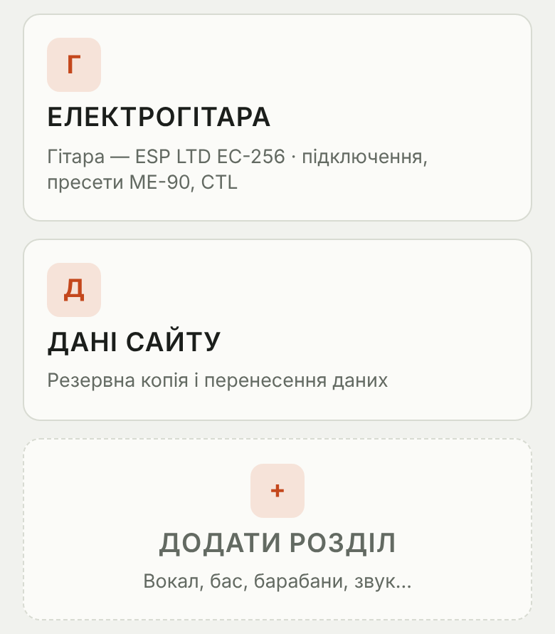

Strangerscover band · Kyiv · Ukraine
Відкрити сайтКоротко про головне для нових учасників: де пісні, як голосувати за нові, як вести своє тренування і як готуємося до виступу. Скриншоти зроблені з прикладом даних.
Натисни Увійти через Google і вибери свою Google-пошту. Пускає лише тих, кого власник сайту додав до списку учасників.
Якщо бачиш «Немає доступу» — напиши Ігорю, яку пошту додати, або увійди іншим акаунтом.
Сайт зручно додати на головний екран телефона: «Поділитися → На початковий екран».

У рядку пісні: зірки — готовність гурту, рядок «Я: ★★★» — твоя власна. Галочка реп. — грали на репетиції сьогодні, я — ти тренував сам. Кнопки під назвою переносять пісню між списками. Натисни на назву, щоб відкрити картку.

Голоси залишаються на пісні назавжди: у інших списках видно значок 👍2 · 👎1.

Історія твоїх тренувань зберігається, навіть якщо пісню перенесли в інший список.


Тут усе про пісню: стрій, тональність, BPM, пресет, вокаліст, структура з акордами, PDF, текст, посилання на розбір і коментарі.
Зміни в полях зберігай кнопкою «Зберегти» внизу. Оцінки й галочки зберігаються одразу.


